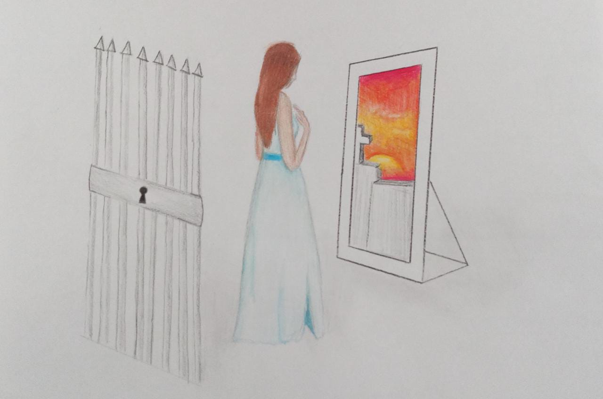
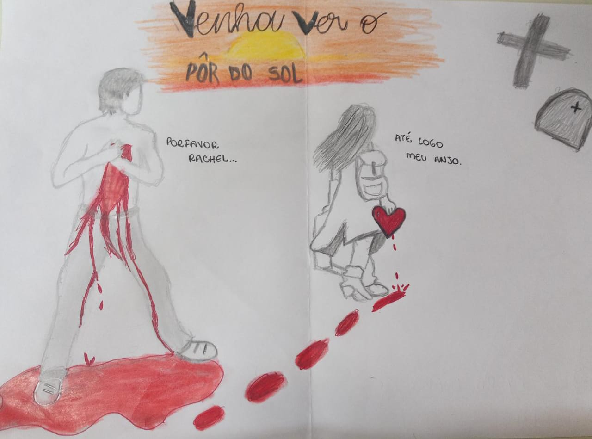
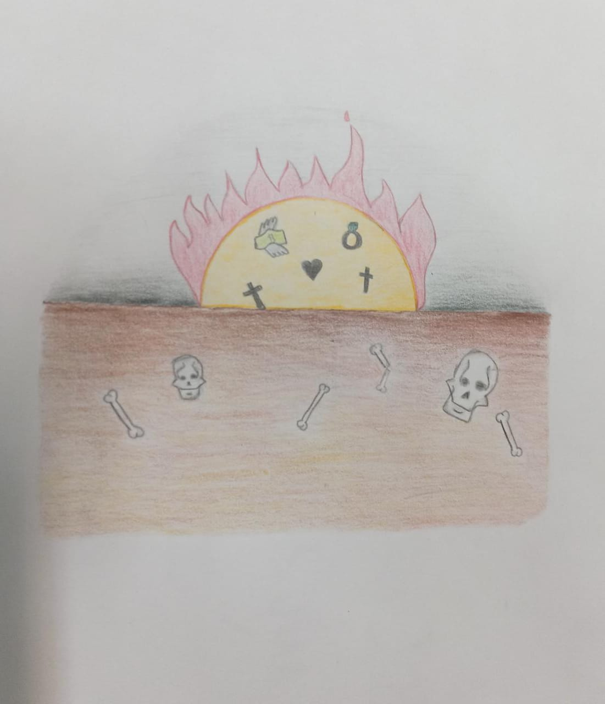

LPL
Conto "Venha ver o pôr-do-sol"
O conto "Venha ver o pôr-do-sol" trata da história de
Ricardo e Raquel, um casal de ex-namorados. A partir
do momento em que terminam o namoro, inconformado
com a separação, Ricardo, por conhecer muito bem o
espírito aventureiro de Rachel, resolve convidá-la
para um último encontro em um cemitério abandonado.
Chegando lá, Ricardo executa a sua vingança de forma
macabra, trancando Rachel em uma tumba e
abandonando-a pelo tempo necessário para que ela
morra, e assim, pague pelo erro de ter se separado
dele.
Explicando os desenhos

Ilustração do conto - Lívia
O desenho indica que ao ser convidada para assistir
o pôr-do-sol, a personagem, na verdade, caminhava
em direção ao seu próprio fim. O título "Venha ver
o pôr-do-sol" dá abertura à essa mesma interpretação,
vendo Rachel como o sol, se escondendo pela última
vez.

Ilustração do conto - Isabelle
O desenho implica que apenas alguém "sem coração"
faria o que Ricardo fez, e por Rachel ter partido
seu coração, ele se vingou.

Ilustração do conto - Ludmila
Listando os itens presentes no desenho, é possível
enxergar um significado para cada um deles:
• O fogo representa o amor, da mesma maneira que pode
nos aquecer, pode nos queimar, o amor também é
representado pelo coração.
• A cruz situada na terra foi feita para representar
a morte, já o anel faz referência ao relacionamento
amoroso q ela tinha com o marido.
• A ausência de cores no pôr-do-sol remete ao final
sombrio do conto, a terra, a caveira e os ossos
aparecem por causa da localização em que eles se
encontram (o cemitério).
Resenha do filme "Cruzada"
O filme “Cruzada” dirigido por Ridley Scott e lançado em 2005 é bastante
popular, especialmente por seu retrato épico de batalhas medievais no
século XII. É uma representação cinematográfica dos acontecimentos ocorridos
no século XII na cidade de Jerusalém, que vive sob a disputa dos muçulmanos,
cristãos e judeus. As Cruzadas foram jornadas empreendidas por nobres europeus
em concordância e endosso da Igreja, na tentativa de tomar para si a cidade
de Jerusalém do domínio dos árabes. Resumidamente, esse filme retrata a história
do ferreiro Balian, no momento, sofrendo pela perda de seu filho e sua esposa.
Ele descobre que um nobre de Jerusalém (Godfrey de Ibelin) é seu pai. O
protagonista decide acompanhá-lo até a Terra Santa, mas Godfrey acaba morrendo
na viagem.
Percebe-se que ao se ver tão sozinho, Balian questiona Deus e o perdão de
pecados, já que não encontra ninguém que o console ou lhe dê respostas para
sua alma. Uma fala do filme que me chamou a atenção foi: “Matar um infiel não é
crime. É um caminho para o paraíso.” que ao meu ver, se assemelha à visão
muçulmana. Chegando a Jerusalém, Balian ascende na nobreza, entre intrigas
palacianas, se envolve com a princesa, que por acaso, é casada com o rival que
herdou de seu pai, defende a cidade no cerco de Saladino até entregá-la e retornar
à sua terra natal, sem quaisquer posses.
Na minha opinião, houve uma dispersão na motivação do protagonista, Balian tem
como objetivo ir a Jerusalém pedir perdão por seus pecados e redimir a alma de
sua mulher, mas esquece esse objetivo logo ao chegar, completando seu objetivo
simplesmente enterrando simbolicamente a cruz da mulher no local onde fora
crucificado o Cristo. Acredito que existam pontos positivos e negativos na obra,
quem não possui um conhecimento mais profundo sobre o assunto pode ser mais capaz
de apreciar o filme sem acabar pontuando brechas. Sem estudo da área, a obra me
agradou na maior parte.